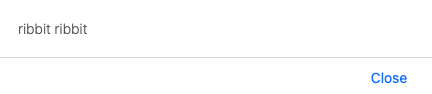
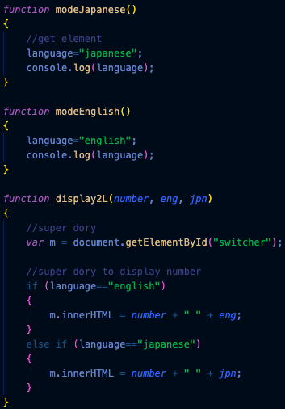

Its widespread functionality in the Internet as made it integrated in HTML, with scripts inside of the head element
Javascript: Day 1
What I have learnt
We first open the script elements through normal HTML conventions <script> until we finish by closing </script>
Inside of the JavaScript elements allows space to insert javascript functions that would interact by the user's actions
Variables enable the necessary data for running the function to be stored in the file. This is indicated by the var text usage
Each function can render changes to the HTML display on user actions such as clicks on text elements.
For example, clicking on the images of cities as shown in the video runs a javascript function that changes the city and image to the corresponding text
The function would show a list of variables that would grab the text identifier to be changed according to the following conditions as seen in the image displayed
Each text that is required to be interact with a user action must be uniquely identified to apply the corresponding function.
For example <h1> id="cityName" onClick = "changeCity()">Wollongong</h1> cityName allows the existing Wollongong text to be replaced by other cities as the innerHTML runs from the variable
<tr> elements would follow for every cell row there is, opened and closed off by its <tr></tr> tags
If necessary, users can be notified of such changes through browser alerts in which the code as specified text to pop up, due to the alert("text");

Javascript: Day 2
What I have learnt
Buttons can be the most user-iniutive way to run javascript
The predetermined valued allows developers to make possible results that can form from the users selection
The language translator required us to run a program that can change translate numbers in worded form to another language. This required storing console.log values in which the button id pressed changes the results
For example, selecting the button English would store the English variable in console memory as seen in the image below. Doing so will render the English output when clicking on the buttons of numbers that would follow its corresponding if conditions

As you can see above, parameters (shown in blue) where applied such as eng, jpn
It is a useful feature to prevent repetitive functions having to be written as the buttons themselves have the different output arguments in case the user does indeed switch language.
From these skills learnt, we made extremely simple programs such as calculators and input forms on the run-down webpage yet with challenging development roadblocks on the way. That debugging tool was indeed helpful for problem-solving